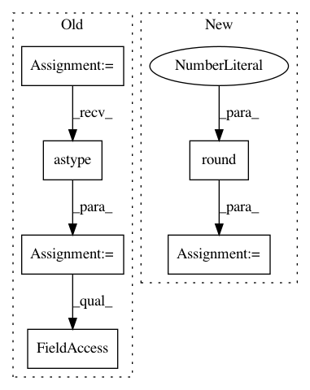

0537b722ea3bd3740ebb53226214cd67d92f2913,tslearn/metrics.py,,itakura_mask,#Any#Any#Any#,391
Before Change
upper_bound[0] = max_slope * numpy.arange(sz2)
upper_bound[1] = ((sz1 - 1) - min_slope * (sz2 - 1)
+ min_slope * numpy.arange(sz2))
upper_bound = numpy.round(upper_bound, 2)
upper_bound = numpy.floor(numpy.min(upper_bound, axis=0) + 1)
region = numpy.asarray([lower_bound, upper_bound]).astype("int64")
mask = numpy.full((sz1, sz2), numpy.inf)
for i, (j, k) in enumerate(region.T):
mask[j:k, i] = 0.
return mask
After Change
+ min_slope * numpy.arange(sz2))
upper_bound_ = numpy.empty(sz2)
for i in prange(sz2):
upper_bound_[i] = min(round(upper_bound[0, i], 2),
round(upper_bound[1, i], 2))
upper_bound_ = numpy.floor(upper_bound_ + 1)
mask = numpy.full((sz1, sz2), numpy.inf)
for i in prange(sz2):
In pattern: SUPERPATTERN
Frequency: 3
Non-data size: 6
Instances
Project Name: rtavenar/tslearn
Commit Name: 0537b722ea3bd3740ebb53226214cd67d92f2913
Time: 2019-05-28
Author: johann.faouzi@icm-institute.org
File Name: tslearn/metrics.py
Class Name:
Method Name: itakura_mask
Project Name: WheatonCS/Lexos
Commit Name: ce5da48b8586d7cfdb392b8cad1988e6bfdd17d5
Time: 2017-08-03
Author: liu_xinru@wheatoncollege.edu
File Name: lexos/processors/analyze/similarity.py
Class Name:
Method Name: similarity_maker
Project Name: WheatonCS/Lexos
Commit Name: 70fcd3094baba3139afcda727683d58c2928261f
Time: 2017-08-04
Author: liu_xinru@wheatoncollege.edu
File Name: lexos/processors/analyze/similarity.py
Class Name:
Method Name: similarity_maker